Molti degli oggetti che possono essere inseriti in un documento di Scribus sono disegni vettoriali, e come tali possono essere modificati. Anche se il titolo di questa pagina sembra riferirsi alle forme geometriche che possono essere facilmente create con l'apposito comando, gli stessi procedimenti possono essere applicati a tutti i seguenti oggetti:
Come forse già sapete o ricordate, quando tenete presente la capacità di convertire un oggetto da un tipo a un altro, scoprirete che c'è una grande flessibilità in ciò che potete fare. Guardate i tre esempi mostrati qui sotto: nel primo abbiamo modificato la forma di una cornice di testo, nel secondo abbiamo preso un glifo di grandi dimensioni, l'abbiamo convertito in contorno e poi in cornice immagine, e nel terzo abbiamo creato un poligono e l'abbiamo convertito in cornice di testo. Lo stato dell'oggetto dopo le operazioni di conversione determina le possibilità di modificarlo: così la grande B può essere modificata come qualunque altra cornice immagine, e il testo contenuto nel poligono può essere modificato nell'editor interno.
| 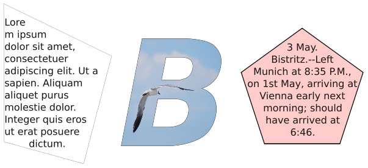 |
Qui a destra è mostrata la scheda Forma nel pannello Proprietà, o più precisamente la sua parte più importante. L'opzione non mostrata qui (Regola di riempimento) sarà spiegata più avanti, in Combinare poligoni. Iniziamo con l'esaminare la voce Angoli arrotondati, poiché è una modifica di tipo semplice, che fa ciò che il nome dice. La casella di controllo è attiva, e questo ci dice che l'oggetto a cui si riferisce è una cornice “normale” (di testo, immagine, rendering) oppure è la forma rettangolare (non il poligono a 4 lati). Il valore nella casella è il raggio dell'angolo, e potete aumentarlo finché due angoli arrotondati adiacenti si incontrano: se ad esempio iniziate con un quadrato, finirete con un cerchio. Un rettangolo assumerà l'aspetto di una capsula con lati appiattiti ed estremità arrotondate. Quest'operazione si può applicare allo stesso modo a cornici di testo o immagine. |
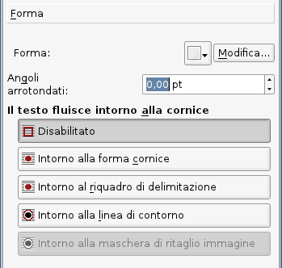 |
| 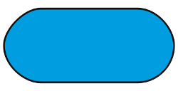 |
Un'altra facile operazione di modifica si può eseguire dall'icona con la freccia verso il basso, vicino al pulsante Modifica. Il menù a discesa che si apre è lo stesso, ben noto, dell'icona Inserisci forma sulla barra degli strumenti, ma in questo caso il risultato è una trasformazione, non la creazione di una nuova forma. Quindi, se volessimo, potremmo convertire la nostra capsula in un Tux accovacciato e obeso. Questo si può fare anche con cornici di testo e di altro tipo, anche se una cornice di testo a forma di Tux sarà probabilmente di scarsa utilità. |
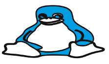 |
| 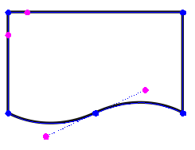 | Passiamo ora al “piatto forte”, e cioè alla modifica di una forma o cornice per mezzo dei suoi nodi e punti di controllo. Quando premete il pulsante Modifica nella scheda Forma, si apre la finestra di dialogo Nodi mostrata a destra e la forma si trasforma in qualcosa di simile a ciò che vedete qui a sinistra, con quei cerchietti di colore blu e magenta. Una cosa da notare subito è che in genere dove c'è un angolo sono visibili soltanto i nodi blu, ma dove c'è una curva si vedono anche i punti di controllo color magenta, che sporgono dal nodo come antenne. In realtà tutti i nodi hanno dei punti di controllo, ma quando si trovano nella stessa posizione del nodo non sono visibili. |
|
| 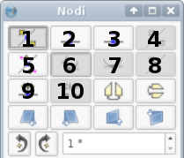 | 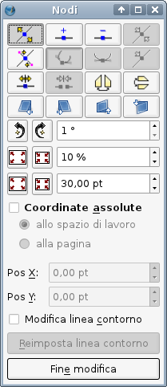 | |
Per descrivere l'uso della finestra di dialogo per la modifica delle forme, usiamo la numerazione mostrata qui sopra per indicare i vari pulsanti che vi si trovano. Quando la finestra viene aperta, il pulsante 1 è selezionato, e questo vi permette di spostare i nodi blu con il mouse. Oltre a spostare nodi singoli, potete fare clic e trascinare una porzione di linea compresa tra due nodi, e spostarla insieme ai suoi nodi. La porzione di linea trascinata mantiene la sua misura, forma e orientamento; sono i segmenti adiacenti ad essere adattati allo spostamento. Se premete il pulsante 5 potete spostare i punti di controllo color magenta. Quando fate clic su un nodo o punto di controllo, esso diventa rosso, e a questo punto, oltre a spostarlo col mouse, le caselle di controllo Pos X e Pos Y si attivano e indicano la posizione del punto selezionato. Se Coordinate assolute non è contrassegnato, i valori sono relativi all'angolo superiore sinistro del “riquadro di delimitazione” della forma o della cornice (vedi Che cos'è il riquadro di delimitazione? più avanti). Ricordiamo che tutte le modifiche fatte possono essere annullate con Ctrl-Z se cambiate idea. Il pulsante 2 permette di aggiungere nodi; i nuovi nodi devono trovarsi in qualche punto lungo il bordo della forma. Il pulsante 3 elimina i nodi su cui fate clic dopo averlo selezionato. Il suggerimento del pulsante 4 dice Azzera punti di controllo, ma non è chiaro come renderlo attivo. Il pulsante 6, una volta premuto, permette di spostare in modo indipendente ciascun punto di controllo. Se viene premuto il pulsante 7, i due punti di controllo di un certo nodo si dispongono su lati opposti del nodo e a uguali distanze, non appena uno di essi viene spostato. Questo tende a far sì che la linea che attraversa il nodo sia una curva uniforme e priva di spigoli. Quando un punto di controllo è selezionato, il pulsante 8 è attivo e se viene premuto, il punto di controllo viene riportato nella posizione del suo nodo. Il pulsante 9 apre la curva o forma, spezzandone il contorno. Premete il pulsante e poi fate clic su un punto del contorno a scelta: sembrerà che sia stato creato un nodo, come accade premendo il pulsante 2, ma in realtà ne sono stati creati due, e se ne spostate uno vedrete che il contorno è stato spezzato. Il pulsante 10 esegue l'operazione contraria, unendo gli estremi liberi di una curva o forma spezzata (e può anche essere usato per ottenere una figura chiusa a partire da una curva di Bézier). I pulsanti non numerati della terza riga (dopo il 10) ribaltano la forma in senso orizzontale e verticale rispettivamente. |
||
I pulsanti nella prima riga al di sotto di quelle numerate eseguono le operazioni di distorsione. Ciascun clic su un pulsante distorce la forma di un piccolo ammontare. Qui vediamo i risultati della distorsione usando i quattro pulsanti in ordine da sinistra a destra, dove ciascuno è stato premuto 10 volte. All'inizio il lato superiore di tutte le quattro forme aveva la stessa posizione Y. |
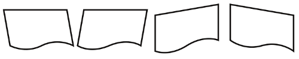 |
Sotto le quattro file di pulsanti si trovano tre caselle di controllo affiancate a sinistra da pulsanti. Le loro funzioni sono piuttosto intuitive, e i due pulsanti svolgono azioni opposte, per la rotazione, e per due modi di allargare o restringere: uno in base a percentuale e l'altro in base a un valore in punti. Ciascun clic su un pulsante provoca una modifica di ammontare pari a quello indicato nella casella di controllo.
| 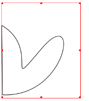 | 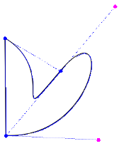 | Il riquadro di delimitazione è lo spazio rettangolare che definisce i confini di una forma e tutti i suoi componenti descrittivi. Vediamo questo concetto illustrato nella prima immagine a sinistra, che evidenzia che il riquadro di delimitazione è molto più grande della forma vera e propria. Quando passiamo alla modalità modifica, come mostrato nell'immagine accanto, vediamo che il riquadro di delimitazione comprende sempre tutti i punti di controllo della forma. C'è una limitazione per i valori di Pos X e Pos Y, che non possono diminuire a meno di 0,0 quando sono riferiti al riquadro di delimitazione, quindi con le caselle di controllo non sarà possibile spostare nodi o punti di controllo a coordinate minori di questo valore. Tuttavia essi possono essere spostati con il mouse e l'angolo superiore sinistro del riquadro di delimitazione sarà allora riposizionato. Una soluzione alternativa può essere l'uso di Coordinate assolute, poiché i loro valori possono essere anche negativi. Intorno al riquadro di delimitazione è una delle possibilità per il flusso del testo intorno alle cornici, come si vede nell'immagine della scheda Forma. |
O forse dovremmo dire: a che serve? La linea di contorno non è mai visibile, tranne in questa modalità di modifica. Immaginiamo di avere una cornice o forma non rettangolare, e di voler far scorrere il testo intorno a essa, ma senza seguire il contorno della cornice o della forma. Anche se è una forma e ha un riquadro di delimitazione, quest'ultimo potrebbe non essere ciò che vogliamo; quindi possiamo usare una linea di contorno per far fluire il testo intorno a essa nel modo che vogliamo. Mentre si modifica la linea di contorno, il flusso del testo si adatta alle modifiche, e questo rende più facile ottenere l'aspetto desiderato.
| 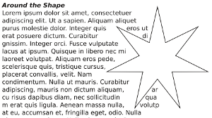 | 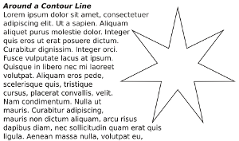 |
La linea di contorno non è considerata parte dei componenti dell'immagine, quindi i suoi nodi e punti di controllo possono trovarsi anche fuori dal riquadro di delimitazione.
Quest'operazione si applica sia ai poligoni che alle forme e a poligoni e forme insieme. L'idea è quella di combinare due o più forme che si trovano a quote diverse per ottenerne una sola.
| 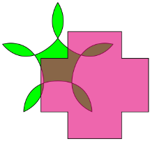 | 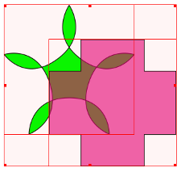 | |
Le immagini qui sopra mostrano la situazione iniziale, con una forma sovrapposta a un poligono, e la forma è dotata di trasparenza. Nell'immagine centrale selezioniamo i due oggetti facendo clic e trascinando il mouse intorno a entrambi, poi selezioniamo Elemento > Combina poligoni nel menù principale, e il risultato è quello dell'immagine a destra. Con questo metodo i colori derivano dall'oggetto inferiore.
| 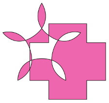 | 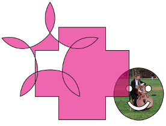 | 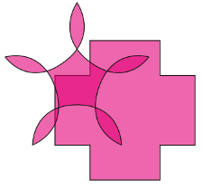 |
Nell'immagine qui sopra a sinistra, abbiamo selezionato le forme tenendo premuto il tasto Maiusc e facendo clic prima sulla forma a croce, e poi abbiamo combinato le due forme; in questo modo, anche combinando più di due forme, i colori derivano dal primo oggetto su cui si è fatto clic. L'immagine centrale mostra che il poligono combinato ha conservato la trasparenza. A destra vediamo i risultati di Elemento > Dividi poligono. È sconsigliato annullare l'operazione di combinazione di poligoni, poiché i risultati possono essere imprevedibili, e in certi casi potrebbero anche causare una chiusura inattesa del programma.
Un altro particolare da notare è che nelle immagini dell'ultima fila, la combinazione più a sinistra usa una regola di riempimento pari-dispari e quella centrale usa una regola non zero. La scelta tra le due regole di riempimento si trova nella scheda Forma e si applica dopo aver combinato i poligoni.
Queste sono modi più sofisticati di combinare forme e poligoni. Possono essere applicate soltanto a forme e poligoni, non a cornici di testo o immagine, ma la conversione in cornici di questi due tipi è sempre possibile successivamente.
| 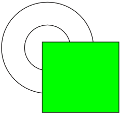 | Iniziamo con questa situazione, due forme semplici. Prima di tutto, selezionatele entrambe, e poi, nel menù principale, scegliete |
||
| 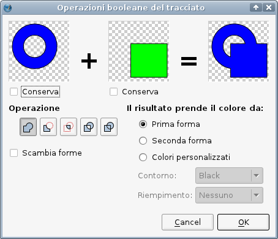 | Si apre la finestra di dialogo mostrata qui a sinistra.
Manteniamo l'operazione predefinita, che consiste nel combinare le forme. Vediamo qui a destra che dobbiamo scegliere il colore della forma combinata; come per Combina poligoni, la forma finale può avere un solo colore di contorno e un solo colore di riempimento. Come vedete, vi è un'opzione Colori personalizzati che permette di scegliere altri colori per entrambi. E l'opzione Conserva? Se selezionata, conserva gli elementi della forma. La differenza è illustrata dagli esempi qui sotto. A sinistra viene mostrato il risultato quando Conserva non è selezionato, e a destra quando lo è. In quest'esempio abbiamo mantenuto i colori della prima forma.
|
Sottrazione | Intersezione | Esclusione | Divisione |
 |  |  |  |
Forme divise e poi separate | |||
La divisione ha alcune caratteristiche interessanti. Sopra abbiamo detto che la forma risultante può avere un solo colore di riempimento, ma qui non sembra che sia così. A differenza di tutte le altre opzioni, con la Divisione si può indicare un colore per l'intersezione delle due forme, e in questo caso abbiamo scelto un colore personalizzato. Divisione significa proprio questo: abbiamo ottenuto tre forme distinte, ciascuna delle quali può essere spostata e separata dalle altre. La conversione di queste forme in altri tipi di cornice è sempre possibile, come mostrato qui; notate inoltre che la forma in alto a destra è una cornice immagine fatta di due “pezzi”. Per finire, osserviamo che con le operazioni del tracciato l'annullamento avrà probabilmente degli effetti, ma non annulla le operazioni eseguite qui. |
 |
||
 |
Per farlo, creiamo una forma rettangolare, e aumentiamo lo spessore del suo contorno a 10 punti. |
 |
Guardando l'angolo superiore sinistro del rettangolo, qui visto con un ingrandimento di circa il 900%, cominciamo a capire ciò che è successo. Lo spazio che inizialmente era il bordo (contorno) è divenuto il riempimento, e lungo il suo bordo è stato creato un contorno (lo spessore del contorno è stato aumentato a 1 punto, in modo da renderlo più visibile). Se all'inizio il contorno fosse stato rosso, anche il nuovo contorno sarebbe rosso. |
 |
Per capire ancor meglio ciò che è successo, convertiamo l'oggetto in cornice immagine e carichiamovi un'immagine. Ora vediamo che lo spazio occupato dalla cornice coincide con quello del contorno originario, quindi abbiamo creato una cornice con un'immagine a partire dal rettangolo originario. |